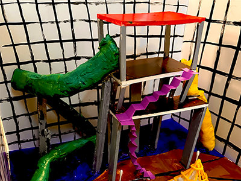
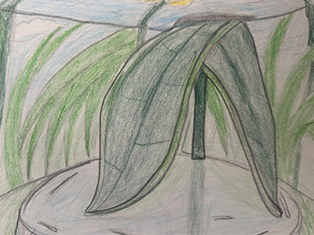
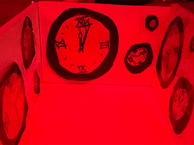

written by Sarah Ruhl
scenic design by Viet Linh To

based on the poem of the same name by Emily Dickinson
scenic design by Viet Linh To

written by Suzan-Lori Park
scenic & lighting design by Viet Linh To

conceptualized by Viet Linh To
lighting design by Viet Linh To
written by Euripides
scenic design by Viet Linh To
composed by Engelbert Humperdinck
scenic design by Viet Linh To
written by Lot Vekemans
lighting design by Viet Linh To